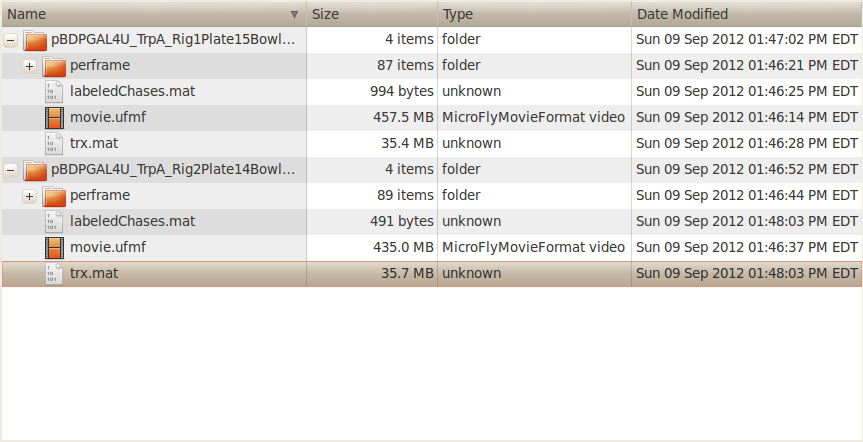
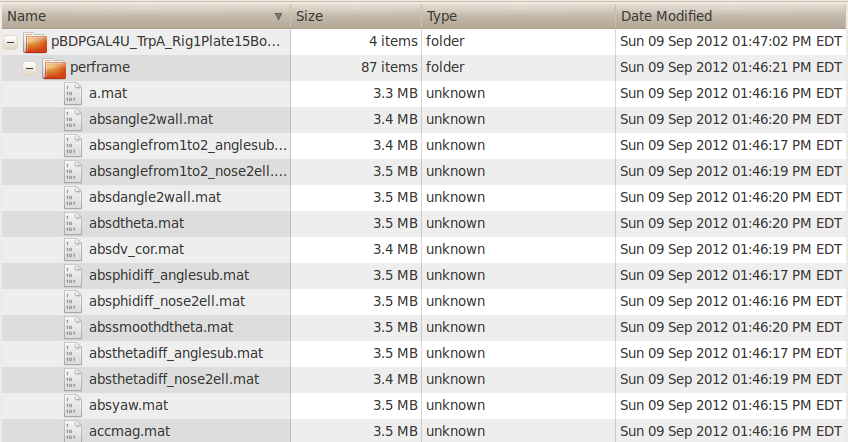

The inputs to JAABA are the experimental video and the animal's trajectories in the videos. JAABA requires that each experiment's data (video and the tracks file) be stored in separate directories. JAABA uses the directory's name as the name of the experiment. The filename for the movies (or the video) for different experiments should have the same name (e.g., movie.avi). Same is the case for the tracks file. JAABA can open avi, seq, mmf, fmf, sbfmf, ufmf video formats.
The screenshots shows 2 JAABA experiments: pBDPGAL4U_TrpA_Rig1Plate15BowlB_20110922T145928 and pBDPGAL4U_TrpA_Rig2Plate14BowlD_20110615T164545. movie.ufmf is the video of the experiment, trx.mat has the tracking information, directory perframe contains the per-frame data that is generated by JAABA and labeledChases.mat is the file that contains the information about which trajectories were labeled as chases by the user in JAABA. movie.ufmf and trx.mat are inputs to JAABA while the per-frame and the labeledChases.mat are created by JAABA.
|  |  |
| Structure Field | Details |
|---|---|
| nframes | number of frames in the trajectory of the current animal. |
| firstframe | first frame of the animal's trajectory. |
| endframe | last frame of the animal's trajectory. |
| id | a non-negative integer that gives the identity number of the trajectory. |
| x | x coordinate of the animal in pixels. |
| y | y coordinate of the animal in pixels. |
| theta | orientation of the animal. |
| a | 1/4 of the major-axis length in pixels. |
| b | 1/4 of the minor-axis length in pixels. |
| x_mm | x coordinate of the animal in mm. |
| y_mm | y coordinate of the animal in mm. |
| theta_mm | orientation of the animal. This is same as theta. |
| a_mm | 1/4 of the major-axis length in mm. |
| b_mm | 1/4 of the major-axis length in mm. |
| sex | sex of the animal. Can be just one value ('M' or 'F' or '?') or can be a cell array of 'M' and 'F' giving the sex for each frame. The size of cell array should be nframes. |
| dt | time difference between the current frame and previous frame in seconds. |
| moviename | movie on which tracking was done. Can be '?' to denote unknown. |
| timestamps | timestamp of each frame. The time is represented as Matlab serial date number, which is the number of days (including fractional days) since a particular reference time. The reference time is defined such that midnight on the morning of January 1, 0000 has a serial date number of 0, midnight of the morning of January 2, 0000 has a serial data of 1, etc. (The year 0000 is defined in ISO 8601:2004 and corresponds to the Gregorian year 1 BC. Year 0001 corresponds to the Gregorian year 1 AD.) More information can be found here. |
Below is a screenshot of the matlab command window showing the trx variable.
The optional variable "timestamp" in the trxfile gives timestamps for each frame of the movie, represented as a serial date number (described in the table above).
{kind=link}
{kind=link}